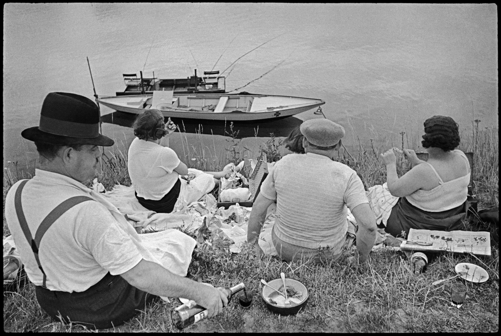

카르티에 브레송은 평범한 일상의 결정적 순간을 포착하는 데 탁월했으며, 이를 통해 사진 속 형식과 내용의 조화를 이루어 사진 예술의 새로운 흐름을 이끌었다.
까르띠에 브레쏭은 소재가 가장 함축적인 국면을 드러내며, 환기력을 가장 잘 발휘하는 형상에 놓이게 되는 바로 그 순간을 읽어내는 데에 능했다. 그는 소형 사진기가 그런 것을 즉시 사진에 담게 할 수 있는—마치 육안의 연장처럼—이상적인 무기임을 알고 있었다. 이것은 우연에 의존하는 것과는 결코 다른 것이다. 그는 파인더를 통해 항상 음화 전체의 짜임새를 고려하며 구성한다. 그의 초기 작품들—그는 1932년 그의 첫 번째 라이카를 구입했다—에는 형태의 강조와 더불어 평범한 눈으로는 시공에서 보이지 않을 그런 평범한 것의 측면을 포획한 기쁨이 있다. 인간에 대한 그의 관심은 보다 열정적인 것이었다. 1938년 런던에서의 조지Ⅵ세의 대관식 사진과 같은 거의 풍자화에 가까운 작품도 적지않게 제작했다. 거기에서 그는 화려한 구경거리를 보여주는 것이 아니라 무심한 구경꾼들을 보여주었던 것이다. 그는 렌즈에 의해 맺히는 끊임없이 움직이고 있는 이미지가, 형태와 표현 그리고 내용의 시간을 뛰어넘어 영원한 조화를 획득하는, 바로 그 절정의 한 순간을 붙잡는 데에 탁월한 능력을 보여주고 있다. 그는 신속하게 계속적으로 촬영할 수 있는 35mm 사진기의 능력을 잘 보여준 탁월한 사례를 남겼고, 혼신의 힘을 다해 작업하고 있다.
그는 생애의 대부분을 주로 전세계를 무대로 촬영 여행을 하는 것으로 보냈다. 그런데 어느 나라에서 찍은 사진이든 민족적 특징이나 국가마다의 고유한 지역적 색채가 전혀 풍기지 않고 거의 똑같이 일상적 상황만이 공통되게 처리되었다. 그래서 그의 사진에는 찍힌 대상들의 개별적 특징이 전혀 드러나지 않고 오직 일상적 상황만이 한결같이 부각되어 있을 뿐이다. 바로 이 점이 까르띠에-브레쏭의 사진 미학에서 주목되는 특징의 하나이다. 그의 사진에서의 주제는 언제나 일상적 상황 바로 그것이었다.
그가 사진에 담으려는 주제가 이렇게 평범했던 것과 마찬가지로 대상을 바라보는 시선도 또한 지극히 평범한 것이다. 그는 오로지 라이카 사진기에 거의 대부분 50mm 렌즈를 끼고 대상을 찍었다. 예외로 광각렌즈나 망원렌즈를 쓸 수밖에 없는 경우에도 고작 35mm 광각렌즈나 준 망원렌즈를 사용할 뿐이었다. 그래서 가능한 한 평범한 시선의 궤도를 벗어나려 하지 않았다. 그러니까 그는 일상적 시선으로 모든 사진의 대상들을 처리하였던 것이다.
까르띠에-브레쏭의 결정적 순간이 지니고 있는 의의는 촬영 기법의 기민한 반응, 즉 명사수가 표적의 한가운데를 꿰뚫는 놀라운 적중률과 같은 단계를 하나 더 넘어선 것이다. 그의 사진에서 누구나가 감탄을 금치 못하는, 의미 내용과 사진적 형식의 완전에 가까운 일치는 뒤집어서 생각하면, 사진이 본능적으로 함유하고 있는 내용과 언어와의 자동적인 일치기능에서 온 동일한 의미전달이라고 할 수 있다.
그의 이러한 사진에 대한 완성도는 제2차 세계대전 후 50년대의 새로운 영상사진의 등장을 가져왔다. 제2차 세계대전 후 젊은 세대들에 의해 전개된 영상사진의 새로운 성격은 인간의 내면의식과 영상언어의 심층적인 일치에 대한 추구였다. 로버트 프랭크(Robert Frank), 윌리암 클래인(Wiliam Klein), 그리고 엘스킨(Van Der Elsken) 등에 의해 주도된 영상사진의 새로운 자각은 이미 까르띠에-브레쏭의 사진작업에서 자각된 실마리의 본격적이며 적극적인 추구라고 말할 수 있다.